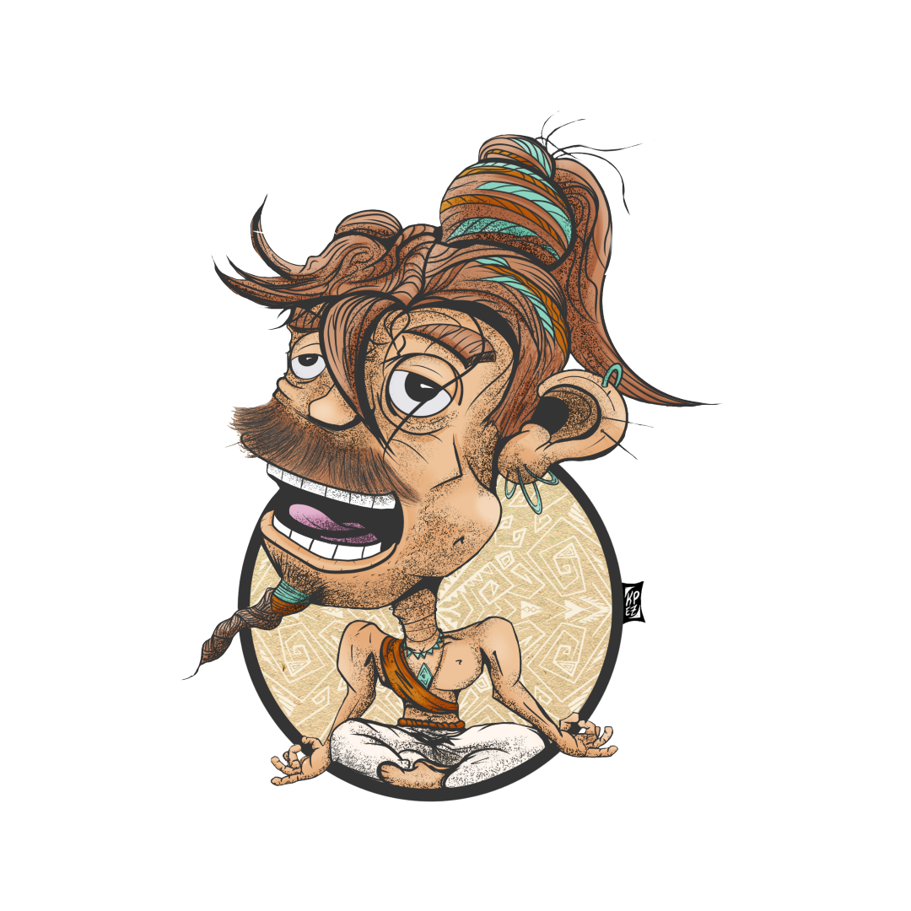

During the Pandemic, I rekindled an old passion of mine with digital illustrations. Utilizing my iPad mini and Apple Pencil, I found a deeper level of passion for the process and have since really enjoyed improving the skill. The following artworks are mostly personal work with a few commissions sprinkled in. My primary goal is to be able to confidently render ideas to express my creativity in ways I cannot in my professional work. Please Enjoy!
Doodles to renders, I wanted to play around with textures across different characters. I received some decent feedback on these and would like to explore the process more.
